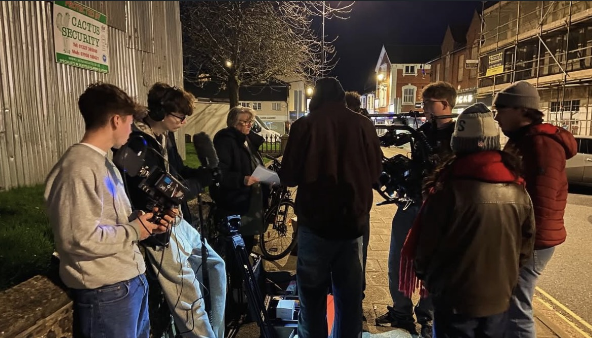
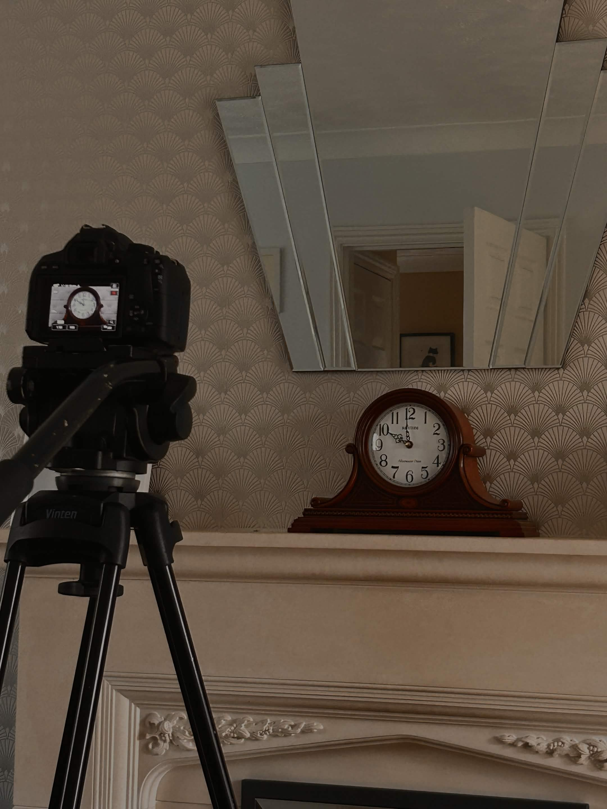
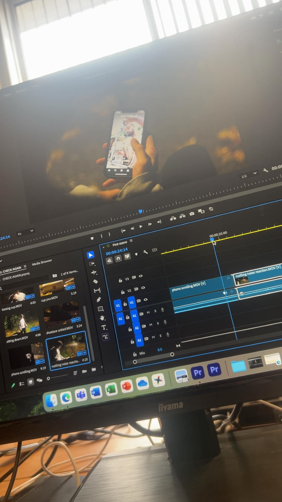
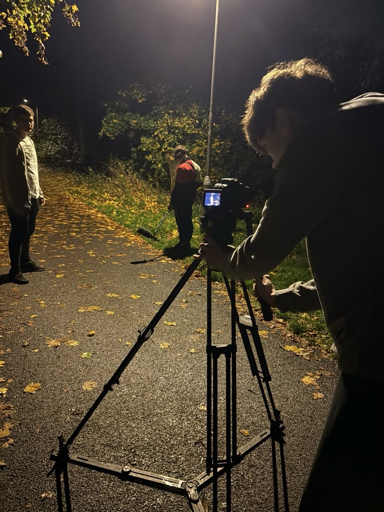
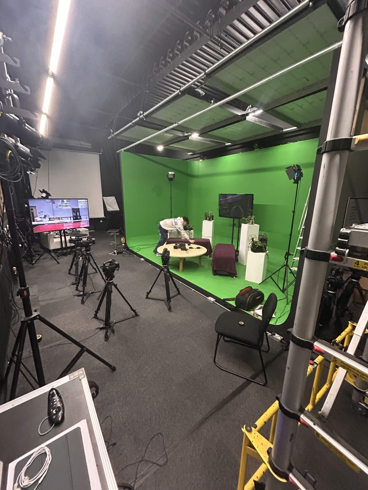
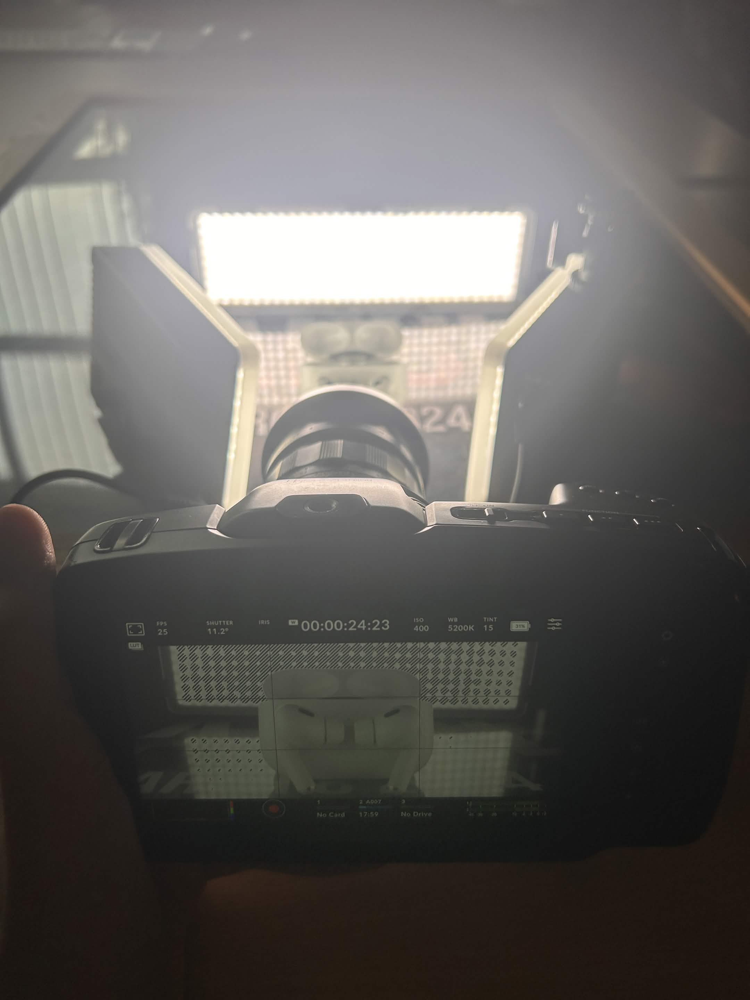
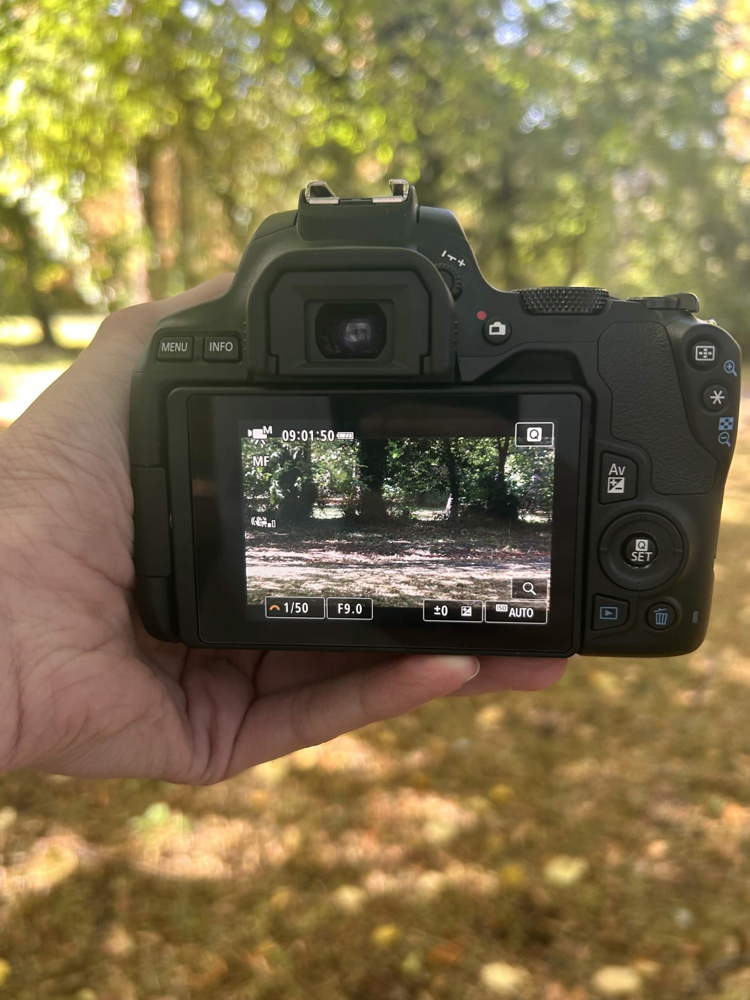
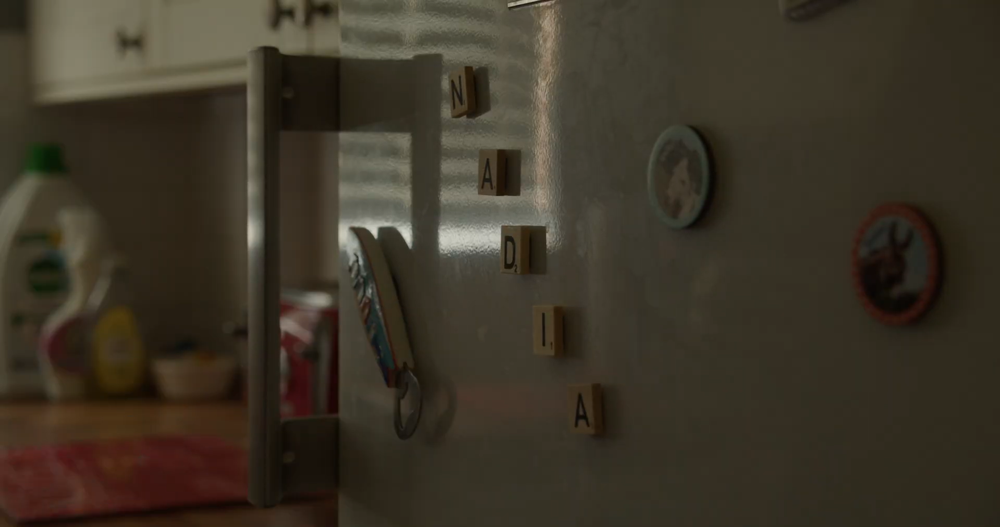

FILM • EDITING • SOUND • PRODUCTION
Cobden Pictures
George Cobden — Filmmaking, Editing, Sound & Production
VIEW MY WORKABOUT COBDEN PICTURES
01 / ABOUT






FROM WATCHING
TO MAKING.
I've watched over 800 films at just 18, and somewhere along the way, watching them turned into wanting to understand how they're made.
Atmosphere is everything.
I'm always drawn to the visual details that can make a shot stick with you — the feeling of a place, the way light falls, or a moment that feels slightly out of place.
I'm George Cobden, currently studying Level 3 Film & Media Development at West Suffolk College. I love being involved behind the scenes, particularly cinematography, editing and sound. I like how small details can completely change a scene — why a character is positioned on one side of the frame, how a piece of music changes the feeling of a moment, or how a sound can make an image feel completely different.
Cobden Pictures is my portfolio and a record of where I'm at as I continue developing as a filmmaker. I'm currently looking towards opportunities in the film industry, whether that's through employment, an apprenticeship or further study.
SELECTED WORK
NADIA
My end-of-year short film, created as a major project during my Film & Media Development course.

Short Film · 2026
WATCH FILM →GET IN TOUCH
CONTACT ME
For job opportunities, enquiries, film projects or potential collaborations, please get in touch.
cobdenpictures@gmail.com